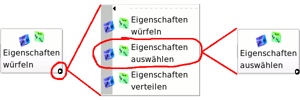

Buttons
MAGuS verwendet 2 Arten von Buttons
- einfache Buttons
- Auswahlbuttons
einfache Buttons:
Einfache Buttons sind Buttons, an welche jeweils nur eine Funktion gebunden ist. Diese wird durch einen
einzelnen Mausklick aktiviert.
Auswahlbuttons:
Auswahlbuttons vereinen mehrere Funktionen in sich. Sie sind an einem kleinen Pfeil in der rechten
unteren Ecke des Buttons zu erkennen. Die aktive Funktion des Buttons ist die im Button sichtbare
Funktion und kann durch einen einfachen Mausklick ausgeführt werden.

Eine alternative Funktion erhält man durch einen Klick auf den Pfeil und die Auswahl der gewünschten
Funktion in der sich öffnenden Auswahl.
|